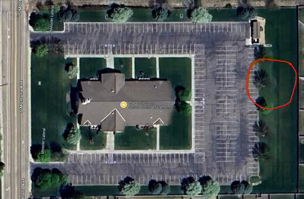

Linger-Longer!

After church services end, it doesn't mean it's time to go home. We are having a linger-longer. After church, we are having a little gather
East side of the parking-lot (See church map).
It will be a finger-food pot-luck. If you have a crock-pot and it needs to stay warm, you can use the kitchen.
There may be a sign-up in the future and the link will be posted once created.
The linger-longer will be on September 29th weather permitting. We hope the weather cooperates.
Please check back for more information when the event comes closer to the date.
Event Information
- When: Sunday, September 29, 2024
- Where: Montana Building East parking-lot grass area
- Time: 12:40pm-2pm